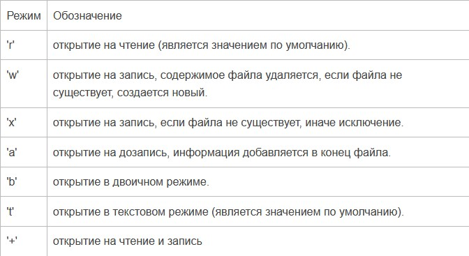

Язык Python
Урок №17. Файлы. Работа с файлами.
Прежде, чем работать с файлом, его надо открыть. С этим замечательно справится
встроенная функция
open:
f = open('text.txt', 'r')
У функции open много параметров, они указаны в статье "Встроенные
функции", нам пока важны 3
аргумента: первый, это имя файла. Путь к файлу может быть относительным или абсолютным. Второй
аргумент, это режим, в котором мы будем открывать файл.

Режимы могут быть объединены, то есть, к примеру, 'rb' - чтение в двоичном режиме.
По умолчанию
режим равен 'rt'.
И последний аргумент, encoding, нужен только в текстовом режиме чтения файла. Этот аргумент
задает
кодировку.
Чтение из файла
Открыли мы файл, а теперь мы хотим прочитать из него информацию. Для этого есть
несколько способов,
но большого интереса заслуживают лишь два из них.
Первый - метод read, читающий весь файл целиком, если был вызван без аргументов, и n символов,
если
был вызван с аргументом (целым числом n).
>>> f = open('text.txt')
>>> f.read(1)
'H'
>>> f.read()
'Hello world!\nThe end.\n\n'
Ещё один способ сделать это - прочитать файл построчно, воспользовавшись циклом for:
>>> f = open('text.txt')
>>> for line in f:
... line
...
'Hello world!\n'
'\n'
'The end.\n'
'\n'
Запись в файл
Теперь рассмотрим запись в файл. Попробуем записать в файл вот такой вот список:
>>> l = [str(i)+str(i-1) for i in range(20)]
>>> l
['0-1', '10', '21', '32', '43', '54', '65', '76', '87', '98', '109', '1110', '1211', '1312',
'1413',
'1514', '1615', '1716', '1817', '1918']
Откроем файл на запись:
>>> f = open('text.txt', 'w')
Запись в файл осуществляется с помощью метода write:
>>> for index in l:
... f.write(index + '\n')
...
4
3
3
3
3
Для тех, кто не понял, что это за цифры, поясню: метод write возвращает число записанных
символов.
После окончания работы с файлом его
обязательно нужно закрыть
с помощью метода close:
>>> f.close()
Теперь попробуем воссоздать этот список из получившегося файла. Откроем файл на чтение, и
прочитаем строки.
>>> f = open('text.txt', 'r')
>>> l = [line.strip() for line in f]
>>> l
['0-1', '10', '21', '32', '43', '54', '65', '76', '87', '98', '109', '1110', '1211', '1312',
'1413',
'1514', '1615', '1716', '1817', '1918']
>>> f.close()
Мы получили тот же список, что и был. В более сложных случаях (словарях, вложенных кортежей и т.
д.)
алгоритм записи придумать сложнее. Но это и не нужно. В python уже давно придумали средства,
такие
как pickle или json, позволяющие сохранять в файле сложные структуры.